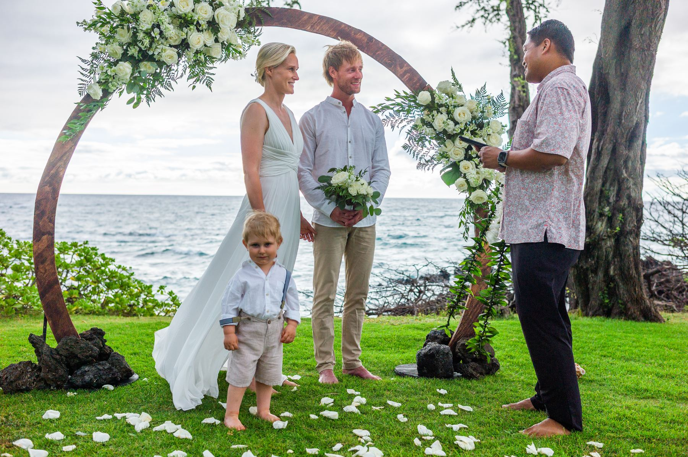
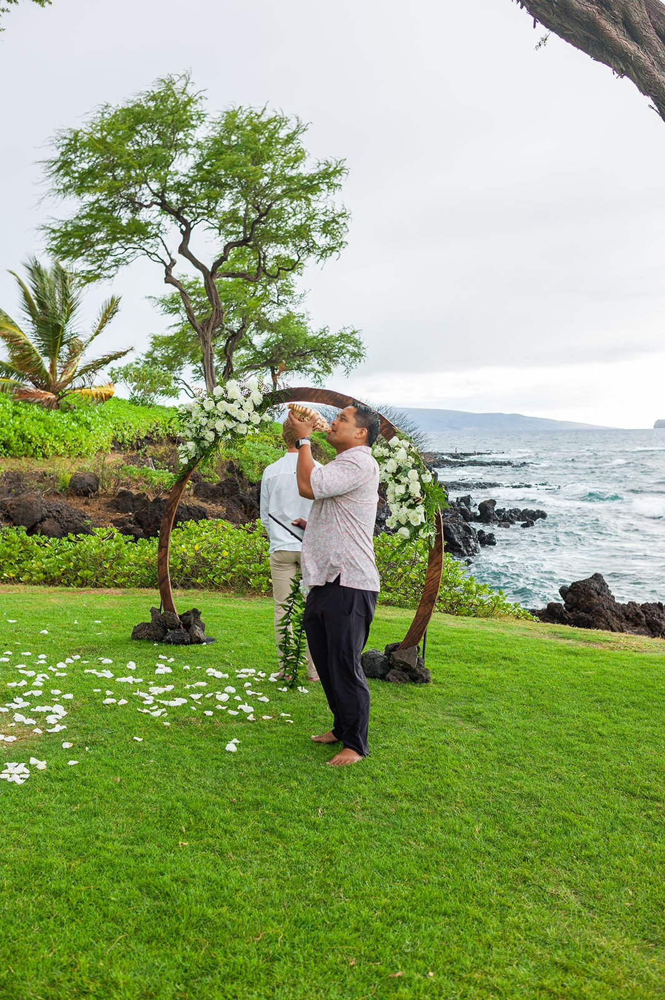

Our Choice for a Maui Wedding Officiant
Couples ask us for officiant recommendations all the time. Our answer is almost always the same: Derick Sebastian.
Twenty-five years of ceremonies taught him what actually matters once the vows begin.

Licensed, Local, and Genuinely Warm
Derick Sebastian is a licensed and ordained minister who has spent more than 25 years serving couples — first as a professional ukulele artist performing on stages around the world, and now as one of Maui's most requested wedding officiants. He was born and raised on Maui, and that local, unhurried warmth carries into every ceremony he leads.
We've stood beside him at real Maui weddings, not just heard about him secondhand. He treats the ceremony as sacred rather than a script, and as photographers, we appreciate something else: he knows exactly when to step back so we can capture the couple's expressions instead of the back of his shirt. He and his wife, Raymi, are raising three sons on Maui — Santana, Marley, and Jackson — and that same sense of family shows up in the ceremonies he performs for people he only just met.
Learn more about Derick Sebastian ↗

Why He Sounds the Pū Before the Vows
Before many of his ceremonies, Derick raises a pū — a Hawaiian conch shell — and sounds it across the water. In Hawaiian tradition, the call of the pū announces an arrival and welcomes those gathered, a fitting way to open a ceremony that is, at its heart, about two people arriving somewhere new together. It's a small detail, but it photographs beautifully and sets a reverent tone before a single word is spoken.
As a professional ukulele artist, he also weaves live music — including a couple's chosen song — directly into many ceremonies, blending faith, tradition, and vows into something that feels personal rather than recited. Couples consistently describe him as calming and easy to be around; one recent pair put it simply: he "has never met a stranger."
What to know before you book.
Who is Derick Sebastian?
Derick Sebastian is a licensed and ordained wedding officiant and professional ukulele artist based on Maui, with more than 25 years of experience performing and officiating ceremonies across the island.
Does he travel to different Maui wedding venues?
Yes. He has officiated ceremonies at oceanfront venues throughout South Maui, including Wailea Beach, Makena Cove, the Andaz Maui at Wailea, and Wailea Golf Club.
Does he play music during the ceremony?
Often, yes. As a professional ukulele artist, he regularly incorporates live music into a ceremony, including a couple's chosen song.
Can he incorporate Hawaiian traditions into the ceremony?
Yes. Couples frequently mention that he blends personal faith, traditional vows, and Hawaiian touches — such as sounding the pū — into the ceremony.
How do we book him for our Maui wedding?
Reach out directly through his website, dericksebastian.com, to check his availability for your wedding date.
Pairing your ceremony with your photography
This recommendation reflects our own experience photographing ceremonies alongside Derick Sebastian. We aren't his booking agent, so please confirm availability, pricing and services directly with him — then let us know your date so we can plan your photography around his ceremony.
Contact Derick Sebastian ↗